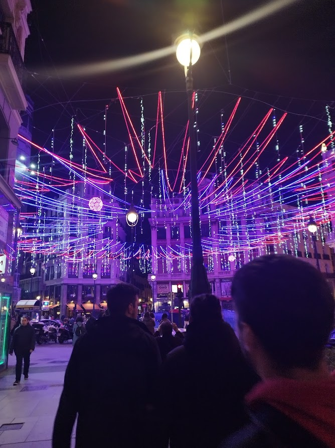

Madrid was our last stop, and having 2 days left we decided to spend it doing free-walking tours and walking around on our own.
Fig. 1 - Almudena Cathedral. Its was first Cathedral to be consecrated outside of Rome.Fig. 2 - Curious Neighbour. They say touching his buttocks gives you good luck. In christmas people visit him to rub their lottery ticket to get the chance of getting the big price.

Fig. 3 - Being close to Christmas, the city was shining with light decorations.